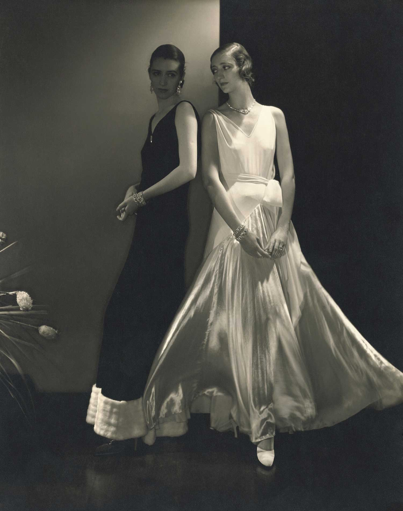

El nacimiento de la fotografía de moda
1890–1930
La moda dejó de limitarse a mostrar prendas para empezar a construir atmósferas, transmitir emociones y proyectar estilos de vida.
Puntos clave
- La fotografía sustituyó progresivamente a la ilustración como principal lenguaje visual de la moda.
- Las revistas comenzaron a actuar como creadoras de tendencias y referentes culturales.
- El diseño editorial adquirió una función estratégica dentro de las publicaciones.
Referentes
- Condé Nast: impulsó una nueva concepción de las revistas de moda, otorgando un papel central a la fotografía, al diseño editorial y a la experiencia visual del lector.
- Baron Adolph de Meyer: transformó la fotografía de moda en una disciplina artística capaz de transmitir sofisticación, exclusividad y emoción.
- Edward Steichen: incorporó una estética moderna y dinámica que conectaba con los valores de progreso, innovación y modernidad del inicio del siglo XX.
Galería

